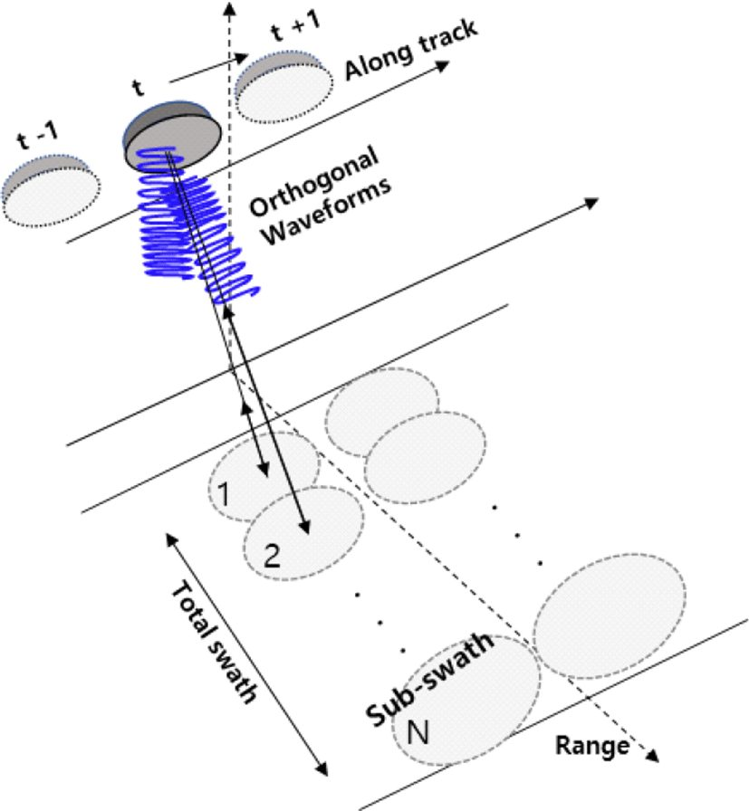

연구 과제
광역 고해상도 위성 SAR를 위한 다중 파형 시스템

개요
차세대 위성 SAR는 광역 관측과 고해상도를 동시에 요구하지만, 기존 단일 파형 SAR는 광역 모드에서 방위·거리 방향 모호성(ambiguity)으로 영상 품질이 저하된다. 본 과제는 상호 상관이 낮은 직교 파형군을 사용하는 MIMO SAR 기법으로 이 한계를 극복하는 방안을 연구하였으며, 상호 직교 특성을 갖는 다중 잡음 OFDM 파형을 설계하고 다중 파형 모드에서의 영상 품질을 SAR 시뮬레이션으로 분석해 광역 고해상도 위성 SAR 모드에의 적용 가능성을 제시하였다. 결과는 항공우주연구원 연구자(류상범·이현철·이상규)와 공저로 발표되었다.
주요 내용·성과
- 광역(wide-swath) MIMO SAR용 다중 잡음 OFDM 직교 파형 설계
- 다중 파형 모드에서의 모호성 억제 및 영상 품질 저하 억제 효과를 SAR 시뮬레이션으로 평가
- 논문 1편: 문민정·송경민·이우경(한국항공대)·류상범·이현철·이상규(한국항공우주연구원), "광역 MIMO SAR 영상 획득을 위한 다중 잡음 OFDM 파형 활용 연구", 한국전자파학회논문지 29(6), 2018.06.30